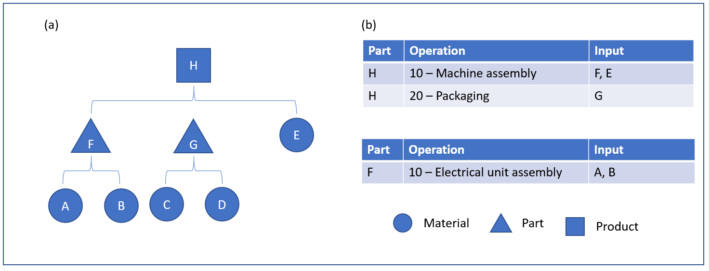
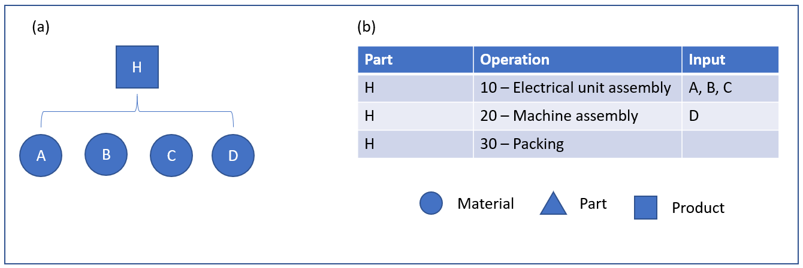
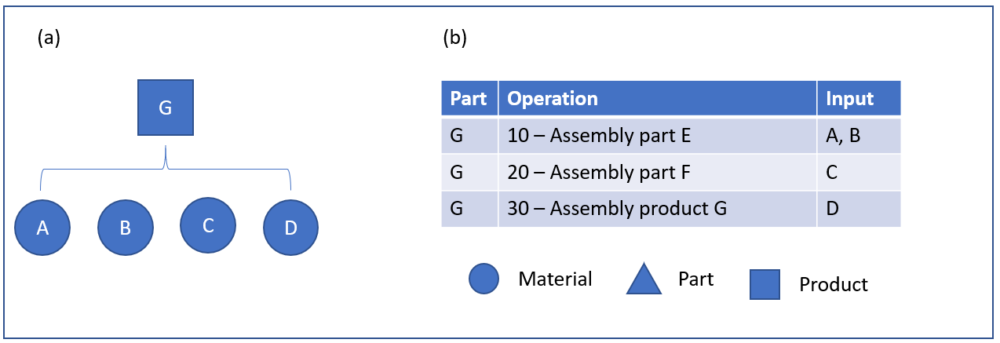
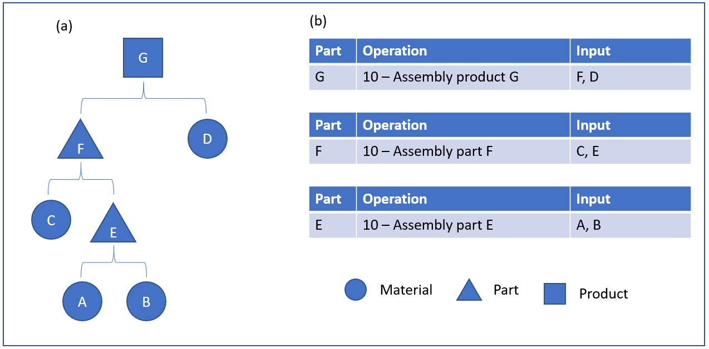
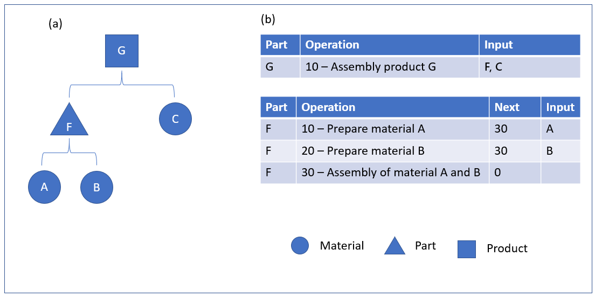
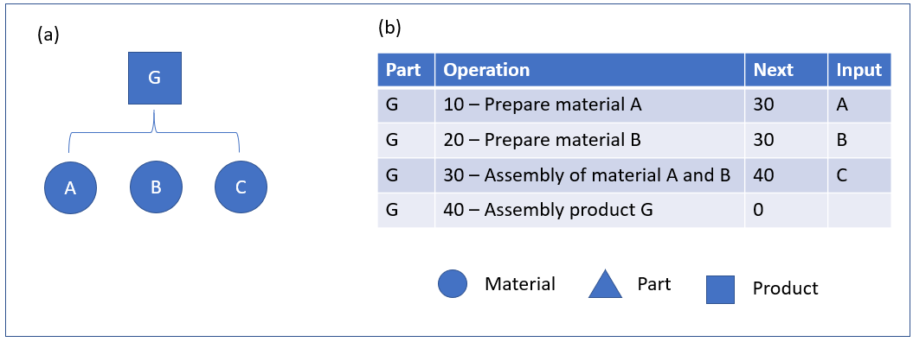

Phantomartikel
Important
Dynamics 365 for Finance and Operations hat sich zu speziell entwickelten Anwendungen entwickelt, mit denen Sie bestimmte Geschäftsfunktionen verwalten können. Weitere Informationen zu diesen Änderungen finden Sie im Dynamics 365-Lizenzierungshandbuch.
In diesem Thema wird ausführlich beschrieben, wie der Positionstyp "Phantom" für die Positionen einer Stückliste (BOM) und die Formel verwendet werden kann. In der folgenden Abbildung ist (a) die Stückliste für Produkt H und Teile F, G und und (b) ist der Arbeitsplan für Produkte H und Teil F.

Diese Abbildung zeigt ein Beispiel einer Stückliste in zwei Ebenen. Produkt H stellt ein Produkt für eine Maschinenzusammenstellung dar. Die Maschinenmontage besteht aus zwei Teilen, einer elektrische Einheit (F), die zwei Materialien hat (A und B) und eine Gruppe Verpackungsmaterialien (G), die auch zwei Materialien hat (C und D). Ein anderes Material (E) wird bei der allgemeinen Zusammenstellung der Maschine verwendet.

Die hier verwendete Darstellung zeigt die erstellte Stückliste für Produkt H. Diese Struktur bietet einen guten Überblick der Teile und Komponenten der gesamten Maschinenmontage. Aber Produktdesigner ziehen es möglicherweise vor, die Stückliste so zu sehen und diese Struktur wird vielleicht nicht korrekt so dargestellt, wie die Maschine im Fertigungsbereich erstellt wird.
Beispielsweise zeigt die Konstruktionsstückliste in der vorherigen Abbildung, dass das elektrische Einzelteil F als separater Teil auf einem separaten Arbeitsauftrag zusammengestellt wird. Allerdings kann es im Fertigungsbereich möglicherweise optimaler beurteilt werden, die elektrische Einheit im Rahmen der Gesamtmaschinenzusammenstellung und nicht als separaten Arbeitsauftrag zu verwenden.
Diese Konstruktionsstückliste gibt auch an, dass Teil G ein separater Teil ist. Allerdings ist in dieser Struktur Teil G nicht ein physisches Teil, sondern eine Zusammenstellung von Verpackungsmaterialien.
Auch wenn eine Konstruktionsstückliste möglicherweise einen hohen Wert für den Entwurf eines Produkts sowie der Verwaltung dieses Designs bereitstellt, ist er möglicherweise nicht die logischste Möglichkeit, den Fertigungssteuerungsprozess des Produkts zu unterstützen. Möglicherweise stellt die Produktions-Stückliste die beste Methode dar, ein Produkt zu erstellen.
Die folgende Abbildung zeigt, wie die vorhergehende Konstruktionsstückliste in eine Produktionsstückliste übergeleitet wird. In dieser Grafik ist (a) die Stückliste für Produkt H und b ist der Arbeitsplan für Produkt H.
In dieser Struktur wird angezeigt, dass es keinen Hinweis von Teilen F und G gibt und das Material, das aus diesen Teile besteht, wurde auf die folgenden Stücklistenebene gehoben.
Im Gegensatz zur Konstruktionsstückliste, die zwei Arbeitskarten hatte, hat die Produktionsstückliste nur eine Arbeitskarte. Der Verpackungsarbeitsgang, der mit Teil G verknüpft war, wurde ebenfalls erhöht und ist nun Teil der Arbeitskarte für Produkt H. Die Zusammenstellung der elektrische Einheit ist der erste Arbeitsgang. Dieser Auftrag ergibt Sinn, weil diese Einheit im folgenden Arbeitsgang verwendet wird, der die Maschinenzusammenstellung ist. Der letzte Arbeitsgang ist der Verpackungsarbeitsgang, der zwei Verpackungsmaterialien verbraucht (C und D).
Der Übergang zwischen der Konstruktionsstückliste und der Produktionsstückliste wird durch den Stücklistenpositionstyp Phantom ermöglicht. Während die Bedingung" Phantom" angegeben wird, sind die Komponenten F und G während des Übergangs zwischen den zwei Stücklistentypen verschwunden. In diesem Beispiel wird der Positionstyps "Phantom" für die Stücklistenpositionen für Teile F und G in der Konstruktionsstückliste angewendet. Wenn ein Produktions- oder Chargenauftrag erstellt wird, wird die Konstruktionsstückliste in die Produktionsstückliste oder den Chargenauftrag kopiert. Wird der Auftrag vorkalkuliert, erfolgt der Übergang von der Konstruktionsstückliste zur Produktionsstückliste wie in den vorhergehenden Bildern dargestellt. Auf der Arbeitskarte in der zweiten Abbildung werden die Verpackungsmaterialien C und D als Input für den Arbeitsgang eingegeben.
Mehrstufige Phantomstücklistenstrukturen
Die Phantompositionsart kann in mehrstufigen Stücklistenstrukturen wie in der folgenden Abbildung dargestellt verwendet werden. In dieser Grafik ist (a) die Stückliste für Produkt G und (b) ist der Arbeitsplan für Teile E und F und Produkt G.

Die folgende Abbildung zeigt die resultierende Fertigungsstückliste und den Arbeitsplan, wenn die Stücklistenpositionen für Teile E und F konfiguriert werden, sodass der Positionstyp Phantom ist. In dieser Grafik ist (a) die Stückliste für Produkt G und (b) ist der Arbeitsplan für Produkt G.

Phantom und Arbeitsplan-Netzwerk
Phantomstücklisten können für eine Stückliste verwendet werden, die auch ein Arbeitsplan-Netzwerk haben. In einem Arbeitsplannetzwerk können eine oder mehrere Arbeitsgänge gleichzeitig ausgeführt werden. Die folgende Abbildung zeigt ein Beispiel eines Routennetzes an, das in einer mehrere Ebenen umfassenden Stückliste verwendet wird. In dieser Grafik ist (a) die Stückliste für Produkt G und Teil F und (b) ist der Arbeitsplan für Produkt G und Teil F, die ein Arbeitsplannetzwerk haben.

In der folgenden Abbildung ist (a) die Stückliste für Produkt G und Teile F und (b) ist der Arbeitsplan für Produkte G und Teil F.
